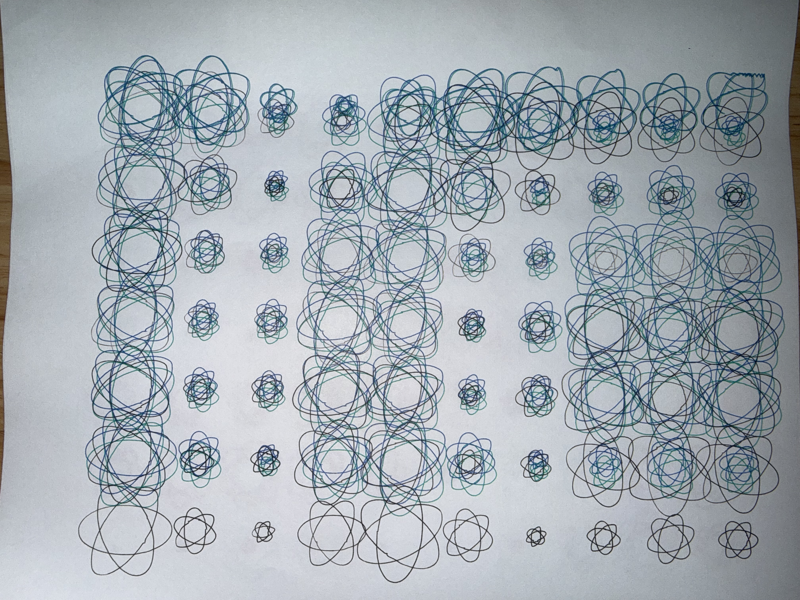
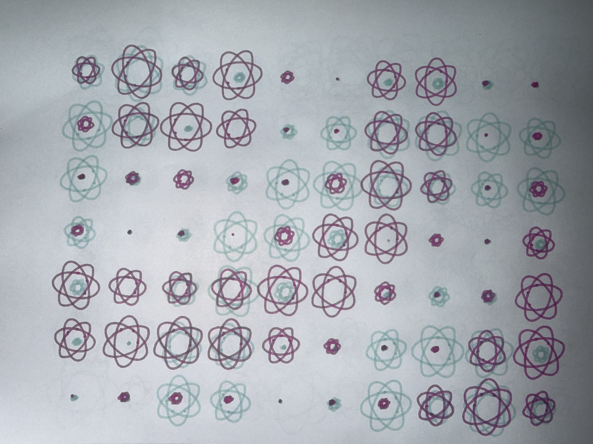

Click anywhere on the canvas to freeze / unfreeze the pattern.
My first test actually had a few minor issues. I realized that sometimes the pen doesn’t start at “Home,” which causes it to draw outside the paper. Also, you have to pay close attention to the image size, or it will extend beyond the paper’s boundaries.
The second time, I realized I needed to “manually set” the pen’s position before each drawing to return it to “Home.” During this attempt, the pen successfully drew all the patterns. Then I began experimenting with different pen types and adjusting the image position to create various visual effects.
The first physical result showed me how overlapping lines create different densities when translated from the screen to paper.

In the second print, I experimented with another variation of this design, trying to flip the entire image in the software and focusing more on the relationship between the overlapping lines and the negative space.
